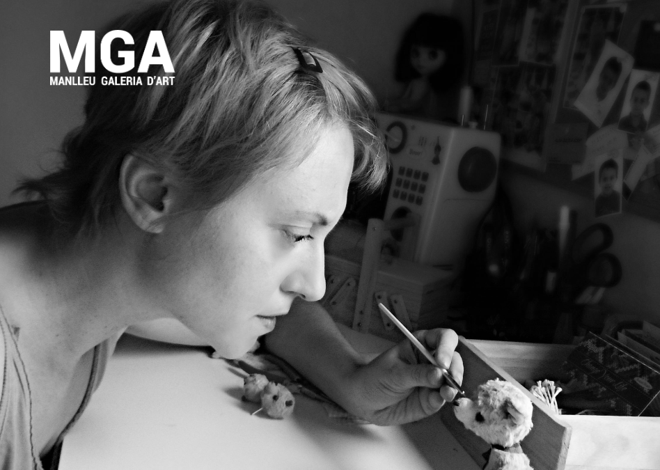

Ivana Anic

Ivana Anic is the artist and creator behind Medveduska, a world of handcrafted collectible teddy bears and original art toys. Her work brings together traditional craftsmanship, imagination and a distinctive artistic sensibility, giving each creation its own character and story.
Exhibitions
In 2008, Ivana held two solo exhibitions in Novi Sad, Serbia, at the National Theatre of Novi Sad and the Student Cultural Centre. Her work has also been presented in numerous group exhibitions, including MGA — Manlleu Galeria d'Art (2015–2016), in Catalonia, Spain.
International Collaborations
Medveduska has collaborated with independent boutiques and specialists in collectible artist bears internationally.
Brücke Bears · Bears on the Square · Old Brick House · Suzie et Gus · La Cocotte Osaka · Shop Calme
Press & Publications
Ivana's artistic work has also been featured in publications. Discover more in the Press section of Medveduska.